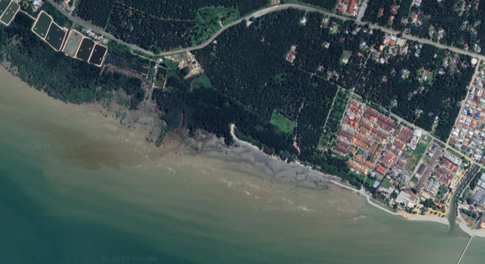
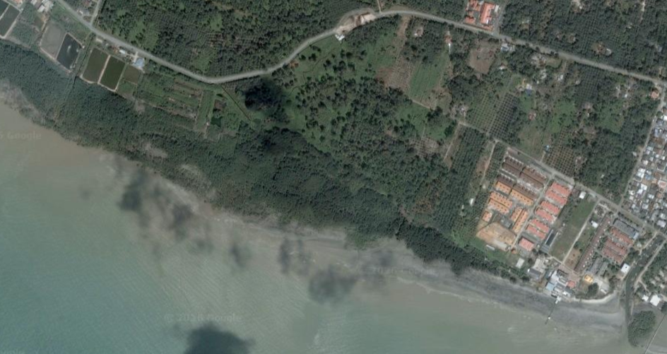
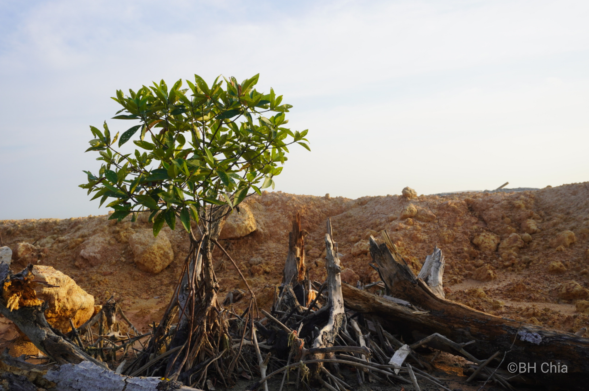
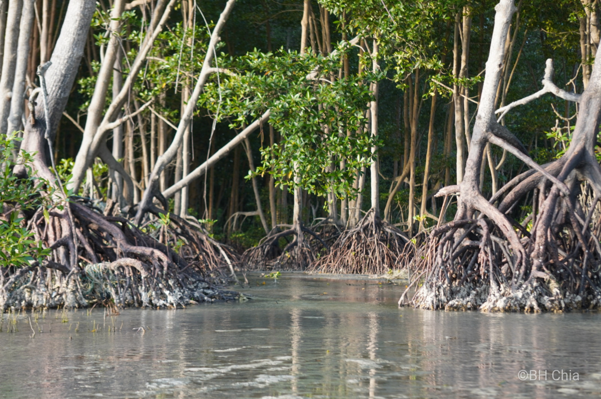
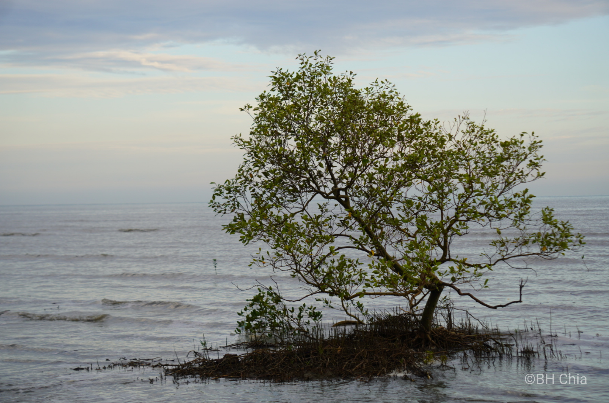
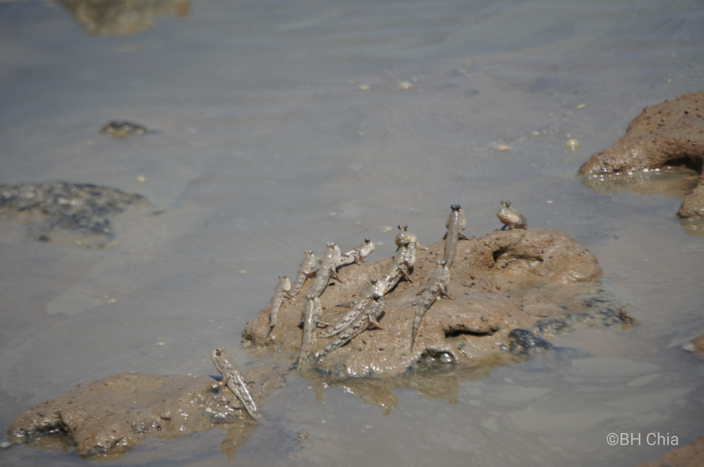
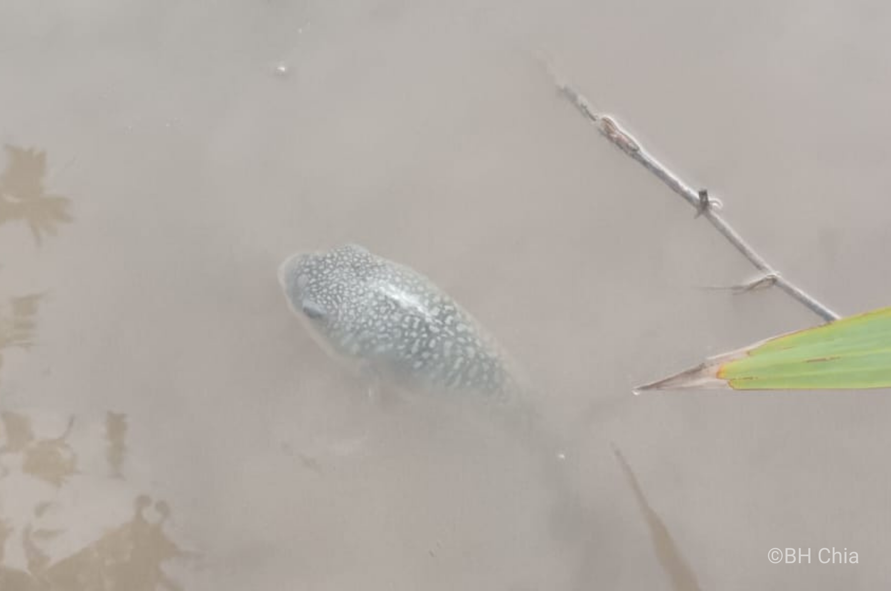
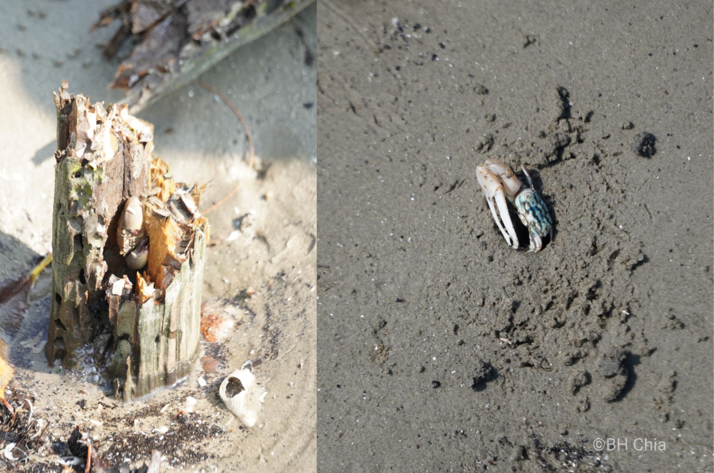
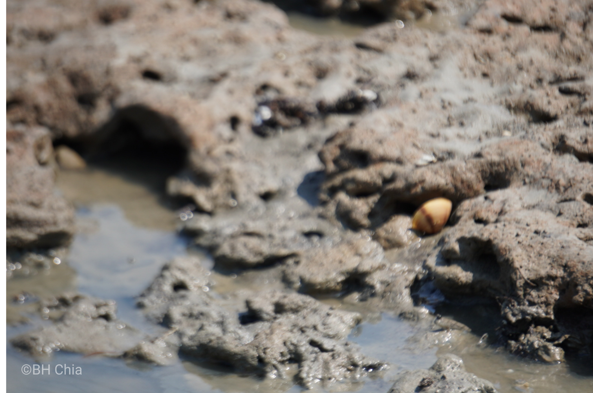

3. Major Findings
Coastal Structure Characteristics Before 2025
Seaward Soft Mangrove Belt
Directly exposed to tidal and wave action, functioning as a buffer to dissipate wave energy, stabilize sediments, and provide shelter for intertidal species.
White Sand Deposition Zone
Located in front of the mangrove forest, elevated relative to inland mangroves, preventing seawater from reaching interior areas during high tide.
High-Risk Zones
B001 and A001 zones exhibited the highest ecological risk from persistent sand encroachment and westward advancement.
Failed Natural Regeneration
Mangrove seedlings struggled to establish; viviparous propagules rapidly decayed under harsh conditions.
Coastal Structure Changes After 2025
Engineering Intervention
RM7.9 million DID (Department of Irrigation and Drainage) river mouth coastal protection project (June 21, 2024 – July 21, 2026), including a 375 m rock revetment, training walls, and beach nourishment works.
Vegetation Destruction
Newly deposited sand rapidly buries and kills vegetation. Previously surviving mangroves show pronounced mortality and structural collapse.
Hydrological Severance
Seawalls and sand deposits block all potential seawater pathways. Tidal exchange nearly completely halted.
Ecological Consequences
Post-2025 engineering has systematically undermined the operational foundation of the entire ecosystem.
Coastal Structure Comparison: 2007 vs. Post-2025


Drag the slider to reveal changes after engineering intervention and sand advancement.
White Sand Advancement Trend and Regional Ecological Risk
Advancement Rate and Pattern
Before 2025: Sand consistently advanced westward from B001 zone at accelerating rates. 2025 Status: Sand front reached the boundary between A001 and A002.
Area Expansion Data
2025 White Sand Area: 9,752 m². Net Increase Rate: ~540 m²/year. Growth Pattern: Non-linear with early rapid initiation.
Beyond Natural Processes
This expansion over 18 years exceeds the scale explainable by natural sedimentation alone, and directly threatens mangrove stability.
Regional Chain Reaction Risk
Current engineering presents local and regional risks, potentially causing irreversible mangrove damage along the southern Selangor coast.
Biodiversity and Ecological Significance
Flora — Mangrove Species
2–3 mangrove species recorded: Rhizophora, Bruguiera, and Avicennia, indicating a structurally complex and mature ecosystem.



Avifauna (Birds)
Grey Heron, Little Egret, Striated Heron, Todiramphus chloris, Haliastur indus, Crow, Seagull, and other raptors. Hornbills observed historically.


Pelagic & Benthic Fauna
Fish species, Mudskippers, Pufferfish, Platycephalus indicus Linnaeus, and bivalves (mussels, clams), indicating stable water exchange and a productive benthic ecosystem.



Intertidal Macrofauna
Crustaceans: Mantis shrimps, crabs (various species), shrimp, and shellfish.



Megafauna & Protected Species
Mammals: Macaques, Monitor lizards. Chelonians: Horseshoe crabs (Tachypleus gigas / Carcinoscorpius rotundicauda) — a highly protected intertidal species and key indicator of ecosystem health.

Species Distribution Differences and Hydrological Imbalance
Key Observation
A001 & A002: Live organisms mainly recorded. B001 outer areas: Numerous deceased individuals. This spatial pattern directly reflects severe hydrological imbalance.
Biological Sink Zones
Abnormal water exchange prevents energy dissipation. Organisms cannot return to suitable habitats. Seedling establishment is halted.
Cascading Impact Risk
Engineering may alter hydrodynamics affecting other zones. Mangroves depend on spatial continuity — systemic collapse is likely if no intervention occurs.